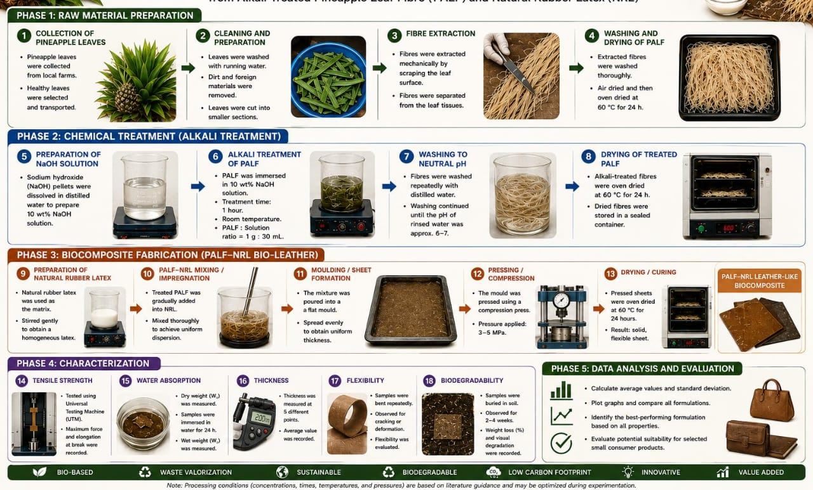

From Raw Pineapple Leaf Waste to Sustainable Bio-Leather

Pineapple leaves are collected as agricultural waste and selected without excessive damage or contamination.
The leaves are washed thoroughly to remove soil, dust and other impurities.
Fibers are extracted from the leaves through mechanical decortication/scraping to separate the PALF from the plant tissues.
The extracted PALF is dried to reduce moisture content before further treatment to ensure stability.
The dried fibers are cut or processed into a suitable size for mixing and sheet formation, ensuring uniform distribution.
PALF is treated using an alkaline solution such as NaOH to remove lignin, hemicellulose and surface impurities. This improves surface roughness and enhances fiber–matrix bonding.
The treated fibers are washed until excess alkali is removed and the fibers reach approximately neutral pH (pH 6-7).
The treated PALF is mixed with the selected polymer/binder (Natural Rubber Latex) to produce a uniform biocomposite mixture.
The mixture is spread or pressed into a flat mould to produce a uniform sheet with the desired thickness.
The mould is pressed using a compression machine (applied pressure of 3-5 MPa) to consolidate the biocomposite structure.
The formed sheet is cured under controlled conditions (e.g., 60°C for 24 hours) to remove moisture and develop its final solid structure.
The final PALF-NRL leather-like sheet is trimmed, surface-finished, and cut into required dimensions for testing and product development.